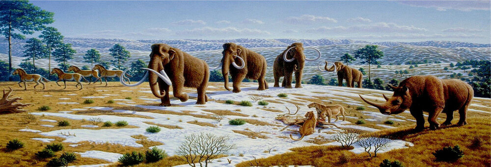
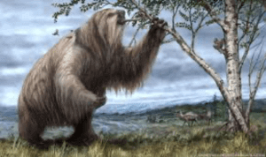
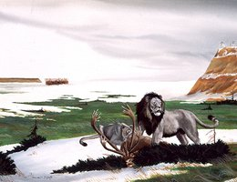
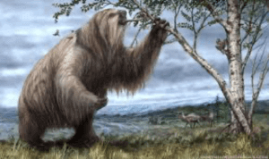
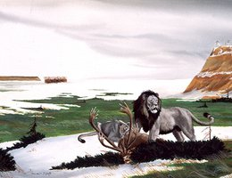

Have an Adventure
Make Memories with Dry Oar

Rivers

Camping

Rapids

More Than Just The Thrill
Enjoy the breathtaking scenery. From valleys, meadows, canyons, and high peaks; it's way more than just the rapids. It's a great way to get away from it all and relax amongst all the beauty of the great outdoors.
Join UsElephants and Other Megafauna of Nebraska
Megafauna were large mammals found during the Pleistocene. The Pleistocene Epoch lasted from around 2.6
million
years ago to around 12,000 years ago. The North American Ice Age peaked from 26,000 years ago to 12,000
years ago.
This era produced many incredible mammals.
Besides the Mammoths, Mastodons, and a saber-toothed cat that were found in Nebraska there were other
wild
creatures like the Giant Ground-Sloth the size of oxen. Nebraska hosted Woolly Rhinos and Dire Wolves.
There was a
beaver the size of a black bear and another beaver that burrowed underground like a prairie dog.
Did you know that camels and Lamas originated from North America? Four species of camels were found in
Nebraska
ranging from the Poebrotherium with the size of a beagle to the Gigantocamelus with the height of a
giraffe and
large canine teeth like a T Rex.
Why Did They Get so Big?
Without dinosaurs around to hunt them, the plains of Nebraska provided the herbivores the safety, food, and room to grow. But now they faced a different threat. Carnivores were able to grow also with the lack of competition from dinosaurs and like the herbivores, they had the food and room to grow big. This produced some truly weird and amazing creatures.
Images for the Home page
.jpg) 


